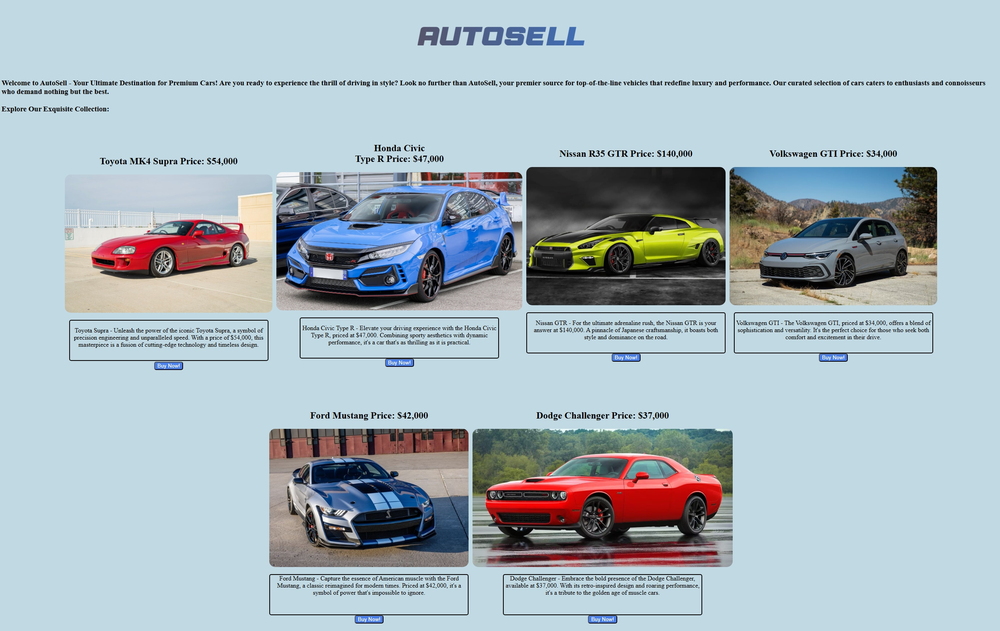

Coding
A lot of my time is spent on coding. I use HTML to build pages and CSS to make them look nice and be compatible with different screen sizes. Coding with Luau is another section, which I use to create fun and interactive games using Roblox Studio for others to play. I enjoy using my skills to help others, like when I helped to make a website for my school's volunteering club to help them get organized. One of my most useful projects was a website where people can check the weather, made using a weather API. Checkout my About Page for more on my coding history.
